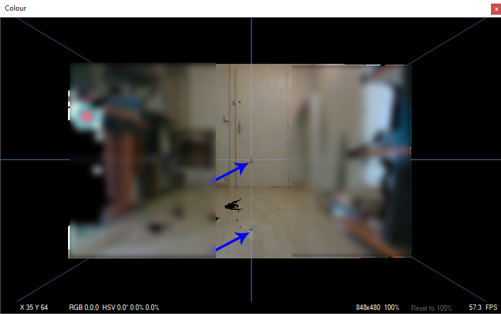
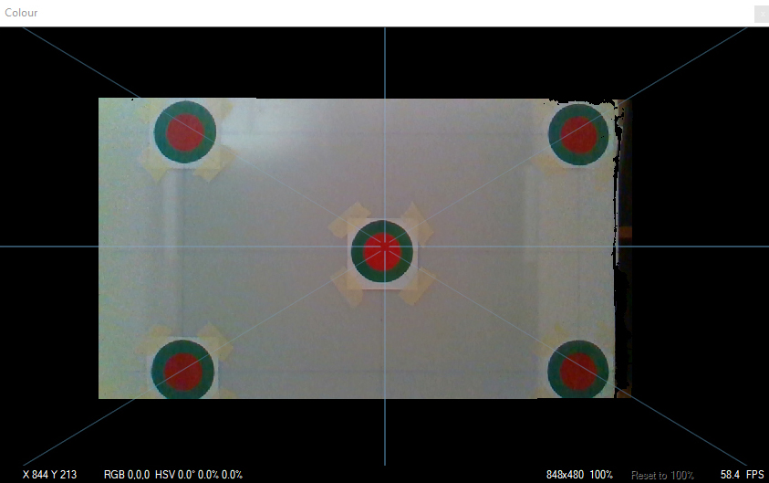
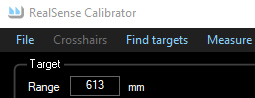
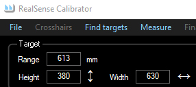
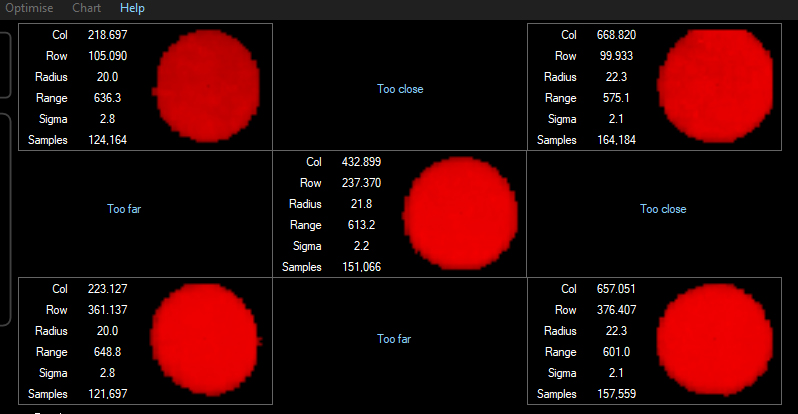
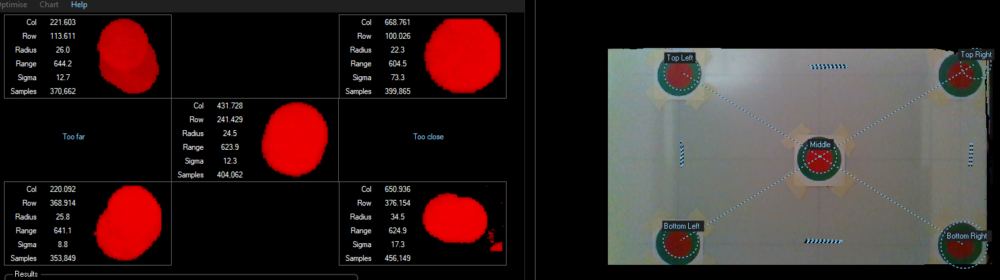
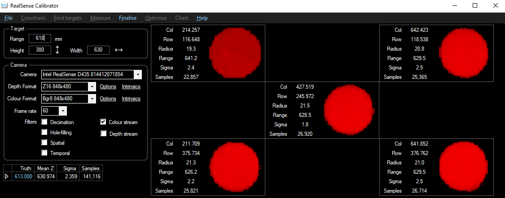
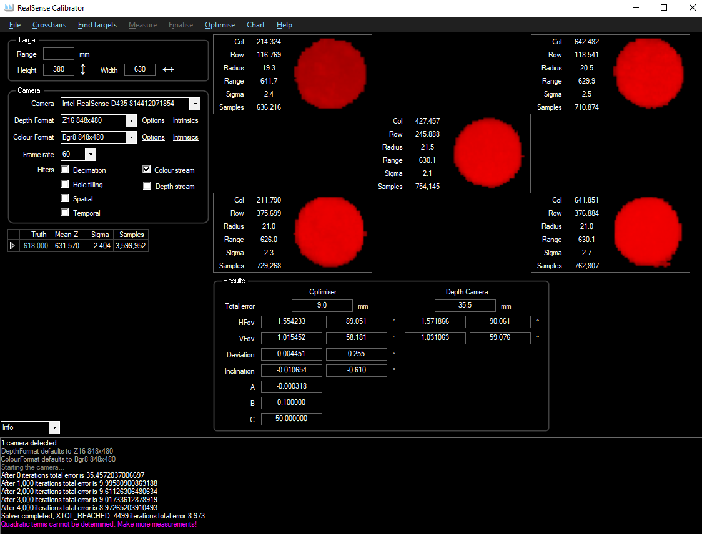

RealSense Calibrator - performing your first calibration
Prerequisite: Setting up for calibration
It is strongly recommended that you read this document in its entirety before starting.
The whole process will take about 30 minutes.
-
Good, even lighting is essential.
-
Fire up RealSenseCalibrator\bin\x64\Release\UI.exe.
Hover the mouse over the interface elements to see the tooltips. Do not change any settings.
-
Place the camera at the zero mark, and line it up to the blue centre crosshair so that the camera is pointing
exactly along the line of markers:

-
Centre your plane of targets on the 1-metre mark, facing back to the camera.
Measure the distance from the front glass of the camera to
the centre of the target with a ruler. Move the camera until the glass is exactly 1 metre away from the target.
The camera's position and orientation is now established, 1 metre from from the target, perfectly perpendicular and
aligned with your markers line on the floor.
-
Move the plane towards the camera until the edges of the green
circles are close to the edges of the image:

Move the plane such that the blue crosshairs interesct all the red targets.
-
Measure the distance from the camera's front glass to the centre of the target. This will probably be around
600mm. Enter this value, in mm, in the Range field:

-
The vertical distance between the centres of the 2 left red targets is the HEIGHT in mm.
The distance between the centres of the 2 right red targets must be the same.
The horizontal distance between the centres of the 2 top red targets is the WIDTH in mm.
The distance between the centres of the 2 bottom red targets must be the same.
Enter these mm values in the width and height fields:

-
Click "Find Targets". Wait a moment for the all the red pixels to be identified. At first, the plane will probably not be perfectly perpendicular to the camera.
In this case the target display will indicate how the plane needs to be adjusted, with "Too close" and "Too far" in blue:

Here, the top of the target is tilted towards the camera and the target is rotated clockwise looking from the top.
The actual misalignment can be observed by comparing the range fields left/right and top/bottom.
-
When you reposition the plane to improve the alignment, the targets will distort:

This is normal, click "Find Targets" to restart the alignment.
Wait a few moments for the red circles to be correctly identified again before making further adjustments.
The program considers the alignment satisfactory when the difference is less than 0.3% of the range.
Don't worry if you can't get it perfectly perpendicular, the program compensates for minor errors.
-
Click "Measure". The counters reset, the frame rate increases and the ranges start recording:

-
The MeanRange will slowly converge. When it seems well settled (only changing be hundredths of a mm, usually after a minute or two),
click "Finalise".
-
Click "Optimise". The optimiser displays its progress in the window at the bottom.
The results will not be very accurate but they should already be a significant improvement on
the values calculated using the camera's intrinsics (here, nearly a factor of 4 better):

Notice the warning in the lower window: As only one plane has been measured, there is not enough data
to calculate the camera's non-linearity.
-
Move the plane away from the camera to the 1-metre mark. Enter the range value, 1'000. Go to step 5.
-
Repeat for 1m50, 2m and 2m50. At longer distances, it may take a while to identify all the red pixels and the result
might not be a nice circle. It's not important.
-
Click "Optimise" again. The warning about quadratic terms should not appear:

-
Click "Chart" to display a comparison between the error using the camera's intrinsics and the error
using the optimised values:

-
Click "File->Save" and choose a folder. Two CSV files and an XML file will be created:
"435 xxxxxx Planes.csv" and "435 xxxxxx Trinsics.csv" and "435 xxxxxx.xml" where
xxxxxx is the serial number of the camera. These are discussed in the next section.
Up: Home
Previous: Setting up for calibration
Next: Analysing the results